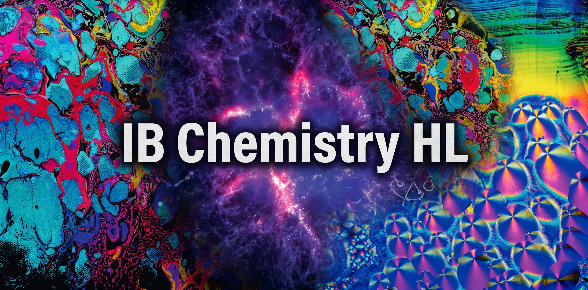
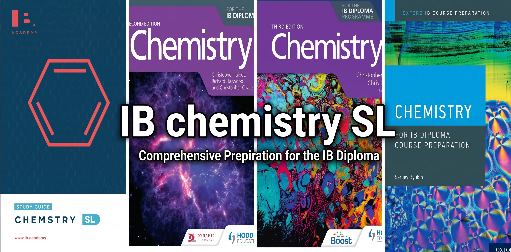

IB Chemistry Overview
International Baccalaureate (IB) Chemistry Program
Welcome, students! This specialized IB Chemistry learning portal provides comprehensive resources aligned with the latest IBO curriculum, restructured around two core pillars: Structure (how matter is put together) and Reactivity (how matter behaves and reacts).
Choose Your Pathway
Select the appropriate program level below to access detailed study notes, syllabus-mapped practice questions, and key chemical formula guides:

IB Chemistry HL
Higher Level * Designed for students pursuing careers in Medicine, Pharmacy, Chemical Engineering, Materials Science, or Biology. * Covers all SL core topics plus Advanced Higher Level (AHL) modules in kinetics, equilibrium, thermodynamics, and complex organic chemistry. * Explore Resources →

IB Chemistry SL
Standard Level * Ideal for students seeking a fundamental natural science foundation or applying to business and social science programs. * Covers core concepts in atomic structure, chemical bonding, kinetics, and a basic introduction to organic chemistry. * Explore Resources →
Syllabus Mapping (2016 vs 2025)
This guide maps the specific 3rd-level learning objectives (Understandings, Applications, and Skills) of the 2025 IB Chemistry syllabus back to the legacy 2016 topics. This granular breakdown allows for exact file tagging (Notes, MCQs, Structured Questions) when migrating resource databases.
Note: Topics starting with 1x or 2x (e.g., 12, 13, 20) represent Higher Level (HL) material.
Structure 1: Models of the particulate nature of matter
| 2025 Level 3 | Specific Concept | 2016 Topic Source | Resource Mapping Details |
|---|---|---|---|
| S 1.1.1 | Elements, mixtures, and compounds | 1.1 | Definitions of pure substances, homogenous/heterogenous mixtures. |
| S 1.1.2 | Kinetic molecular theory & state changes | 1.1 | Heating/cooling curves, phase state characteristics. |
| S 1.2.1 | The nuclear atom and isotopes | 2.1 | Protons, neutrons, electrons, isotope properties. |
| S 1.2.2 | Relative atomic mass & mass spectrometry | 2.1, 12.1 | Calculating \(A_r\), interpreting mass spectra (HL fragmentation). |
| S 1.3.1 | Emission spectra and energy levels | 2.2 | Hydrogen emission spectrum, photon energy calculations. |
| S 1.3.2 | Sublevels (s, p, d, f) & orbital diagrams | 2.2 | Aufbau principle, Hund’s rule, Pauli exclusion principle. |
| S 1.3.3 | Ionization energy and spectral data (HL) | 12.1 | Successive ionization energies, deducing group numbers. |
| S 1.4.1 | The mole and Avogadro’s constant | 1.2 | \(N_A\), converting between mass, moles, and particles. |
| S 1.4.2 | Empirical and molecular formulas | 1.2 | Percentage composition and combustion analysis calculations. |
| S 1.5.1 | Ideal gas model and assumptions | 1.2 | Kinetic theory of gases, deviations from ideal behavior. |
| S 1.5.2 | Gas laws and calculations | 1.2 | \(PV = nRT\), Boyle’s, Charles’s, and Gay-Lussac’s laws. |
Structure 2: Models of bonding and structure
| 2025 Level 3 | Specific Concept | 2016 Topic Source | Resource Mapping Details |
|---|---|---|---|
| S 2.1.1 | Ionic bonding and lattices | 4.1, 14.1 | Formation of ions, lattice enthalpy, physical properties. |
| S 2.2.1 | Covalent bonds and Lewis structures | 4.2, 4.3, 14.1 | Octet rule, resonance, formal charge (HL), bond length/strength. |
| S 2.2.2 | VSEPR theory and molecular shapes | 4.3, 14.1 | Predicting geometry (2 to 6 electron domains), hybridization (\(sp, sp^2, sp^3\)). |
| S 2.2.3 | Intermolecular forces | 4.4 | London dispersion, dipole-dipole, hydrogen bonding. |
| S 2.3.1 | Metallic bonding and alloys | 4.4 | Sea of electrons, non-directional bonding, alloy properties. |
| S 2.4.1 | Giant covalent structures & polymers | 4.3, Option A | Giant covalent structures (macromolecular) such as diamond, graphite, graphene, polymers, and nanotubes. |
Structure 3: Classification of matter
| 2025 Level 3 | Specific Concept | 2016 Topic Source | Resource Mapping Details |
|---|---|---|---|
| S 3.1.1 | Periodic table organization | 3.1 | Groups, periods, blocks (s, p, d, f), metals vs non-metals. |
| S 3.1.2 | Periodic trends | 3.2, 13.1 | Atomic radius, electronegativity, electron affinity, oxide nature. |
| S 3.1.3 | Transition metals (HL) | 13.1, 13.2 | Variable oxidation states, catalytic properties, colored complexes. |
| S 3.2.1 | Organic functional groups & nomenclature | 10.1 | Alkanes, alkenes, alkynes, alcohols, aldehydes, ketones, acids. |
| S 3.2.2 | Isomerism | 10.1, 20.1 | Structural isomers, stereoisomers (conformational, optical/chiral). |
Reactivity 1: What drives chemical reactions?
| 2025 Level 3 | Specific Concept | 2016 Topic Source | Resource Mapping Details |
|---|---|---|---|
| R 1.1.1 | Calorimetry and enthalpy change | 5.1 | Exothermic/endothermic, \(q = mc\Delta T\), standard enthalpy states. |
| R 1.2.1 | Bond enthalpies and Hess’s Law | 5.2, 5.3 | Calculating \(\Delta H\) using bond energies and standard formation data. |
| R 1.2.2 | Born-Haber cycles (HL) | 15.1 | Lattice enthalpy calculations, hydration enthalpy. |
| R 1.4.1 | Entropy and Gibbs free energy (HL) | 15.2 | Calculating \(\Delta S\) and \(\Delta G\), predicting reaction spontaneity. |
Reactivity 2: How much, how fast and how far?
| 2025 Level 3 | Specific Concept | 2016 Topic Source | Resource Mapping Details |
|---|---|---|---|
| R 2.1.1 | Reacting masses and limiting reactants | 1.3 | Stoichiometry, theoretical yield, percentage yield. |
| R 2.1.2 | Solutions and titrations | 1.3 | Concentration (\(mol/dm^3\)), dilutions, volumetric analysis. |
| R 2.2.1 | Collision theory and reaction rates | 6.1 | Factors affecting rate (concentration, surface area, temperature). |
| R 2.2.2 | Rate laws and mechanisms (HL) | 16.1 | Order of reaction, rate constant (\(k\)), rate-determining step. |
| R 2.2.3 | Activation energy and Arrhenius (HL) | 6.1, 16.2 | Maxwell-Boltzmann distribution, Arrhenius equation graphs. |
| R 2.3.1 | Equilibrium state and Le Chatelier | 7.1 | Dynamic equilibrium, shifting equilibrium position. |
| R 2.3.2 | Equilibrium constants | 7.1, 17.1 | Calculating \(K_c\), reaction quotient (\(Q\)), relationship with \(\Delta G\). |
Reactivity 3: What are the mechanisms of chemical change?
| 2025 Level 3 | Specific Concept | 2016 Topic Source | Resource Mapping Details |
|---|---|---|---|
| R 3.1.1 | Bronsted-Lowry acids and bases | 8.1, 8.2 | Proton transfer, conjugate acid-base pairs, amphiprotic species. |
| R 3.1.2 | pH scale and strong/weak acids | 8.3, 8.4 | Calculating pH, \(K_w\), comparing dissociation levels. |
| R 3.1.3 | Acid-base calculations & buffers (HL) | 18.1, 18.2, 18.3 | \(K_a\), \(K_b\), buffer composition, titration curves, indicators. |
| R 3.2.1 | Oxidation states and redox equations | 9.1 | Assigning oxidation numbers, half-equations, Winkler method. |
| R 3.2.2 | Voltaic and electrolytic cells | 9.2, 9.3 | Anode/cathode reactions, salt bridge, electroplating. |
| R 3.2.3 | Standard electrode potentials (HL) | 19.1 | \(E^\theta\) values, calculating cell potential, predicting spontaneity. |
| R 3.3.1 | Lewis acids and bases | 8.1 | Electron-pair donors and acceptors. |
| R 3.3.2 | Transition metal complexes (HL) | 13.2 | Ligands, coordinate covalent bonds, splitting of d-orbitals. |
| R 3.4.1 | Nucleophilic substitution (HL) | 20.1 | \(S_N1\) vs \(S_N2\) mechanisms, primary/secondary/tertiary halogenoalkanes. |
| R 3.4.2 | Electrophilic addition & substitution (HL) | 20.1 | Markovnikov’s rule, nitration of benzene, organic reduction. |
General Past Papers Bank
Search and filter past exam papers for IB Chemistry. Use the dashboard below for quick filtering:
IB Chemistry General Past Papers Bank
Loading past papers...